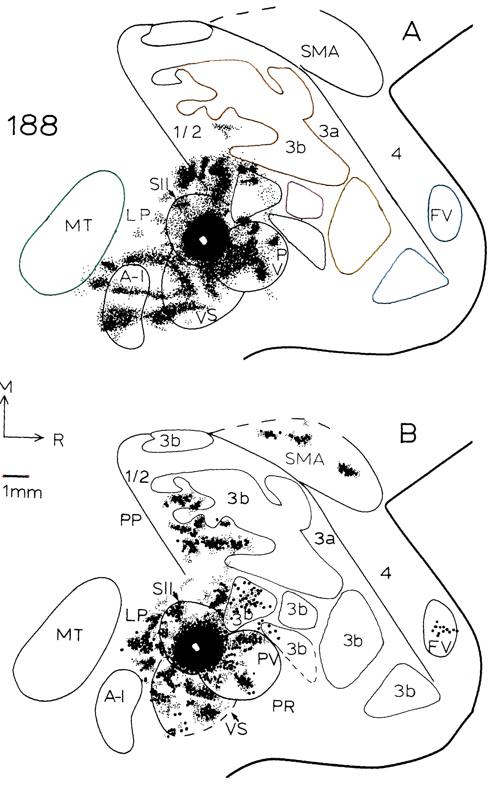

fig12A
Remaining field limits are recorded individually in the canonical unmeasured entries.
Editable ImageJ ROIs · Canonical geometry


Source and remaining limits

- 3b total: No complete uniquely reproducible field envelope in this view: limits are open, dashed, tracer-obscured or extend beyond the depicted reconstruction. Receptive body-part cells and tracer foci are not substituted for a whole field.
- 1/2: No complete uniquely reproducible field envelope in this view: limits are open, dashed, tracer-obscured or extend beyond the depicted reconstruction. Receptive body-part cells and tracer foci are not substituted for a whole field.
- 3a: No complete uniquely reproducible field envelope in this view: limits are open, dashed, tracer-obscured or extend beyond the depicted reconstruction. Receptive body-part cells and tracer foci are not substituted for a whole field.
- 4: No complete uniquely reproducible field envelope in this view: limits are open, dashed, tracer-obscured or extend beyond the depicted reconstruction. Receptive body-part cells and tracer foci are not substituted for a whole field.
- SMA: 2026-10-20 reassessment: The upper SMA dashed border has a broad undrawn interval before its rostral arc, and is partly near the panel/crop edge. No complete total accepted from this panel.
- SII: No complete uniquely reproducible field envelope in this view: limits are open, dashed, tracer-obscured or extend beyond the depicted reconstruction. Receptive body-part cells and tracer foci are not substituted for a whole field.
- PV: No complete uniquely reproducible field envelope in this view: limits are open, dashed, tracer-obscured or extend beyond the depicted reconstruction. Receptive body-part cells and tracer foci are not substituted for a whole field.
- PR: No complete uniquely reproducible field envelope in this view: limits are open, dashed, tracer-obscured or extend beyond the depicted reconstruction. Receptive body-part cells and tracer foci are not substituted for a whole field.
- PP: No complete uniquely reproducible field envelope in this view: limits are open, dashed, tracer-obscured or extend beyond the depicted reconstruction. Receptive body-part cells and tracer foci are not substituted for a whole field.
- LP: No complete uniquely reproducible field envelope in this view: limits are open, dashed, tracer-obscured or extend beyond the depicted reconstruction. Receptive body-part cells and tracer foci are not substituted for a whole field.
- 17: No complete uniquely reproducible field envelope in this view: limits are open, dashed, tracer-obscured or extend beyond the depicted reconstruction. Receptive body-part cells and tracer foci are not substituted for a whole field.
- 18: No complete uniquely reproducible field envelope in this view: limits are open, dashed, tracer-obscured or extend beyond the depicted reconstruction. Receptive body-part cells and tracer foci are not substituted for a whole field.
- A-I: 2026-10-20 reassessment: The enlarged upper panel shows the left A-I border coalescing with dense tracer over a substantial interval. Its top and lower/right strokes do not uniquely fix the obscured left arc.
- VS: 2026-10-20 reassessment: Tracer obscures the upper VS/SII/PV junction. The lower visible VS arc alone cannot determine the whole field.